인터넷정보관리사-2급 (2017-12-02 기출문제)
1과목: 인터넷의 이해
1. 다음 중 인터넷에 대한 설명으로 가장 거리가 먼 것은?
- TCP/IP를 표준 프로토콜로 사용한다.
- 인터넷에 대한 통제 및 관리를 하는 기관은 존재하지 않는다.
- 인터넷의 효시는 상업적 목적으로 개발된 ARPANet이다.
- 인터넷 연결을 위해서는 IP주소를 반드시 배정받아야 한다.
(정답률: 65%)

2. 다음에서 설명하는 인터넷 관련 기구는?
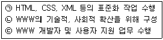
- W3C
- ISOC
- KRNIC
- CERT
(정답률: 73%)
3. 다음 중 인터넷의 특징으로 가장 거리가 먼 것은?
- TCP/IP를 기본 프로토콜로 사용한다.
- 상업적 용도로는 사용할 수 없다.
- 누구나 인터넷에서 제공되는 서비스를 동일하게 이용할 수 있다.
- 기업이나 국가 전산망에도 활용되고 있다.
(정답률: 81%)
4. 다음 중 국내 인터넷 역사를 시대 순으로 바르게 나열한 것은?
- KREONet → SDN → KORNET → HANA/SDN
- SDN → HANA/SDN → KREONet → KORNET
- KREONet → SDN → HANA/SDN → KORNET
- SDN → KREONet → HANA/SDN → KORNET
(정답률: 49%)
5. 다음 중 IP주소의 등급과 사용 용도가 알맞게 짝지어진 것은?
- A클래스 : 실험용도 예약
- B클래스 : 학교 전산망
- C클래스 : 멀티캐스트용
- D클래스 : 소규모 통신망, ISP 업체
(정답률: 60%)
6. 다음 중 IPv6의 주소 표기법에 대한 설명으로 알맞은 것은?
- IPv6는 128비트이며 8비트씩 16자리로 구성되어 있다.
- 각 자리는 ;(세미콜론)으로 구분하여 표기한다.
- 각 자리가 연속되는 0일 경우 축약해서 표현할 수 있다.
- IPv4와 혼용하여 작성할 수 없다.
(정답률: 45%)
7. OSI 7계층에서 에러 제어, 통신량 제어, 데이터 분할 등을 수행하는 계층은?
- 데이터링크 계층
- 네트워크 계층
- 전송 계층
- 세션 계층
(정답률: 38%)
8. 클라이언트가 동적인 IP주소를 할당 받아 인터넷을 사용할 수 있게 해주는 프로토콜은 무엇인가?
- DHCP
- HTTP
- DNS
- SMTP
(정답률: 55%)
9. 다음에서 설명하는 소셜 미디어의 특징은 무엇인가?
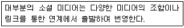
- 연결
- 대화
- 공개
- 참여
(정답률: 77%)
10. 다음 중 인터넷 상의 수많은 정보 중, 이용자가 원하는 것만 골라 서비스 해주는 맞춤형 뉴스 서비스를 의미하는 용어는?
- AR
- SNS
- SLA
- RSS
(정답률: 70%)
11. 다음에서 설명하는 클라우드 컴퓨팅 서비스 형태는 무엇인가?
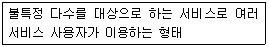
- 프라이빗 클라우드
- 퍼블릭 클라우드
- 하이브리드 클라우드
- 제너럴 클라우드
(정답률: 72%)
12. 다음 중 메신저 소프트웨어와 가장 거리가 먼 것은?
- Skype
- Line
(정답률: 68%)
13. 다음에서 설명하는 프로토콜은 무엇인가?
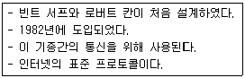
- SMTP
- TCP/IP
- SNMP
- DHCP
(정답률: 75%)
14. 다음 중 클라우드 환경의 스토리지 서비스 중, 자체적으로 웹 오피스 기능을 제공하지 않는 것은?
- 드롭박스
- 구글 드라이브
- 마이크로소프트 원드라이브
- 네이버 클라우드
(정답률: 68%)
15. 다음 중 클라우드 컴퓨팅 관련 기술에서 서비스 제공업체가 실시간으로 자원을 제공하며, 서비스 신청부터 자원 제공까지의 업무자동화 솔루션을 가리키는 말은?
- 오픈 스페이스
- 서비스 프로비저닝
- 서비스 수준 관리
- 가상화 기술
(정답률: 70%)
16. 다음 중 용어와 그에 대한 설명이 잘못 짝지어진 것은?
- 모바일 가상화 : 두 대의 스마트폰을 가상화하여 한 대의 스마트폰처럼 사용하는 기술
- 스패밍 : 검색엔진에서 검색결과의 위치와 빈도를 높이기 위해 한 페이지 내에서 같은 키워드를 수십개씩 반복하여 입력하는 행위
- 미러링 : 한 개의 디스크에 물리적 장애가 발생하면 자동으로 장애가 발생한 디스크를 대체하여 서비스를 지속할 수 있는 기법
- I-PIN : 주민번호를 대신하여 아이디와 패스워드를 이용하여 본인확인을 하는 수단으로 사용되는 인터넷 상의 개인 식별번호
(정답률: 49%)
17. 다음 중 전자우편에서 발생하는 에러 메시지에 대한 설명으로 잘못된 것은?
- Local Configuration Error : 송신자의 시스템에 문제가 있는 경우 발생
- Sender blocked : 송신자가 다수의 사용자 중 특정인에게 메일을 송신하려는 경우 발생
- Connection Time Out : 수신측의 메일 서버에 문제가 있는 경우 발생
- Host Unknown : 호스트나 도메인의 이름이 잘못되거나 정확하지 않은 경우 발생
(정답률: 47%)
18. 다음 중 개인정보보호법에서 노조가입, 종교단체가입, 정당가입에 해당하는 개인정보의 유형은?
- 병역정보
- 의료정보
- 조직정보
- 일반정보
(정답률: 80%)
19. 다음 중 무명 또는 이명저작물의 보호기간은?
- 50년
- 60년
- 70년
- 80년
(정답률: 63%)
20. 다음 중 전자문서의 안전성과 신뢰성을 확보 하고 그 이용을 활성화하기 위해 만들어진 법령은?
- 전자서명법
- 저작권법
- 전자금융거래법
- 정보통신진흥법
(정답률: 60%)
21. 다음 저작권법 제2조의 정의와 관련하여, 괄호 안에 들어갈 말이 알맞게 짝지어진 것은?
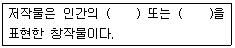
- 사상, 감정
- 창작, 감정
- 사상, 창작
- 생각, 창작
(정답률: 58%)
22. 다음 개인정보보호법 위반 시 처벌과 관련하여, 괄호에 들어갈 내용으로 알맞은 것은?
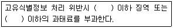
- 5년, 5천만원
- 3년, 3천만원
- 5년, 3천만원
- 3년, 5천만원
(정답률: 50%)
23. 다음 중 저작권법의 정의에 대한 설명으로 가장 거리가 먼 것은?
- 저작자는 저작물을 창작하는 자를 말한다.
- 공연은 동일인의 점유에 속하는 연결된 장소에서 이루어지는 전송을 포함한다.
- 실연자는 실연을 지휘, 연출 또는 감독하는 자를 포함한다.
- 음반제작자는 음을 음반에 고정하는데 있어 전체적으로 기획하고 책임지는 자를 말한다.
(정답률: 57%)
24. 다음 중 데이터 처리과정을 전반적으로 제어 하는 컴퓨터 시스템의 핵심장치는?
- 기억장치
- 입출력장치
- 중앙처리장치
- 보조기억장치
(정답률: 76%)
25. 다음 중 나머지와 특성이 다른 소프트웨어는?
- GoldWave
- Cool Edit
- Adobe Audition
- AutoCAD
(정답률: 54%)
26. 다음 중 LAN과 WAN의 중간 형태로 도시 규모의 네트워크를 가리키는 말은?
- MAN
- VAN
- ISDN
- B-ISDN
(정답률: 56%)
27. 다음 서버 에러 코드 중, 많은 사용자 접속에 의해서 요청 서비스를 제공할 수 없음을 나타내는 것은?
- 403 Forbidden
- 404 Not Found
- 500 Internal Server Error
- 503 Service Unavailable
(정답률: 62%)
28. 다음에서 설명하는 HTML 태그는?
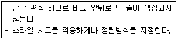
- <P>
- <DIV>
- <PRE>
- <XMP>
(정답률: 49%)
29. 멀티미디어의 4가지 구성요소 중 이미지에 대한 설명이다. 괄호 안에 알맞은 용어로 짝지어진 것은?
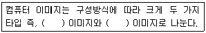
- 벡터, 래스터
- 벡터, 오브젝트
- 오브젝트, 비트맵
- 비트맵, 래스터
(정답률: 50%)
30. 다음 중 나머지와 특성이 다른 이미지 파일 확장자는?
- PNG
- BMP
- WMF
- JPG
(정답률: 69%)
31. 다음 설명에 해당하는 토폴로지는?
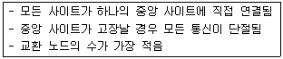
- 성형
- 트리형
- 버스형
- 망형
(정답률: 61%)
32. 다음 중 중앙처리장치의 레지스터 명칭과 용도가 올바르게 짝지어진 것은?
- 프로그램 카운터 – 다음에 실행될 명령어 주소 저장
- 명령 레지스터 – 다음에 실행될 명령어 저장
- 누산기 – 사칙연산과 논리연산 등의 수행
- 플래시 메모리 – 실행되고 있는 데이터 저장
(정답률: 43%)
33. 다음 운영체제의 평가기준에 대한 설명과 관련하여, 괄호 안에 알맞은 말이 짝지어진 것은?
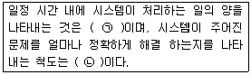
- ㉠ : 사용가능도, ㉡ : 변환시간
- ㉠ : 처리능력, ㉡ : 신뢰도
- ㉠ : 처리능력, ㉡ : 변환시간
- ㉠ : 사용가능도, ㉡ : 신뢰도
(정답률: 72%)
2과목: 인터넷 자원 탐색
34. 다음 중 웹 브라우저의 역할에 대한 설명으로 옳은 것을 모두 고른 것은?
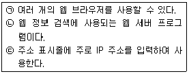
- ㉠
- ㉠, ㉢
- ㉡, ㉢
- ㉠, ㉡, ㉢
(정답률: 43%)
35. 다음 사례에서 A씨에게 적절한 웹 브라우저의 기능은?
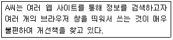
- 커서 브라우징
- 쿠키
- 새로 고침
- 탭 브라우징
(정답률: 78%)
36. 다음과 같은 키워드를 검색엔진에 넣고 검색하였을 때, 예상되는 결과로 알맞은 것은?
- 삼바
- 핫자바
- 아라크네
- 넷스케이프
(정답률: 53%)
37. 다음 중 인터넷 익스플로러에서 다운로드 내역을 확인하기 위한 단축키는?
- Ctrl + D
- Ctrl + J
- Ctrl + E
- Ctrl + L
(정답률: 45%)
38. 다음 중 InPrivate 브라우징에서 저장이 차단되는 데이터만을 모두 고른 것은?
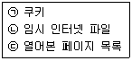
- ㉠
- ㉠, ㉢
- ㉡, ㉢
- ㉠, ㉡, ㉢
(정답률: 60%)
39. 다음 사례에서 A씨에게 가장 적절한 익스플로러 메뉴는?
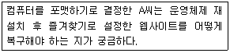
- 열기
- 페이지 설정
- 다른 이름으로 저장
- 가져오기 및 내보내기
(정답률: 74%)
40. 다음 설명과 관련 있는 익스플로러 11의 기능은?
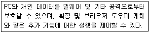
- 향상된 보호 모드 사용
- 스크립트 디버깅 사용 안 함
- URL 경로를 UTF-8로 보내기
- 타사의 브라우저 확장기능 사용
(정답률: 69%)
41. 다음과 같은 경우 사용할 수 있는 인터넷 익스플로러의 단축키는?
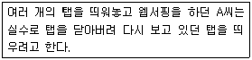
- Ctrl + Shift + T
- Ctrl + T
- Shift + Alt + P
- Ctrl + Shift + L
(정답률: 68%)
42. 다음 설명에 해당하는 인터넷 익스플로러11의 '검색 기록 삭제' 항목은?
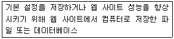
- 쿠키 및 웹 사이트 데이터
- 임시 인터넷 파일 및 웹 사이트 파일
- 양식 데이터
- 추적 방지, ActiveX 필터링 및 Do Not Track 데이터
(정답률: 52%)
43. 다음 중 크롬 브라우저에서 북마크 및 설정 가져오기 기능을 통해 가져올 수 있는 항목과 가장 거리가 먼 것은?
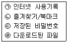
- ㉠, ㉢
- ㉡, ㉣
- ㉢
- ㉣
(정답률: 44%)
44. 다음 중 크롬 브라우저의 시크릿 모드에 대한 설명으로 알맞은 것을 모두 고른 것은?
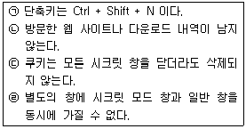
- ㉠, ㉡
- ㉠, ㉢
- ㉡, ㉣
- ㉢, ㉣
(정답률: 59%)
45. 다음 설명에 해당하는 것만을 모두 고른 것은?
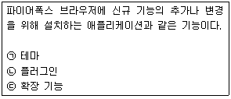
- ㉠
- ㉠, ㉢
- ㉡, ㉢
- ㉠, ㉡, ㉢
(정답률: 40%)
46. 검색엔진의 구성 요소인 로봇의 주요 기능에 해당하는 것을 모두 고른 것은?
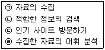
- ㉠, ㉡
- ㉠, ㉢
- ㉡, ㉣
- ㉢, ㉣
(정답률: 52%)
47. 다음 중 로봇이 웹에 미치는 영향으로 가장 거리가 먼 것은?
- 잦은 내용 검색으로 네트워크에 트래픽을 초래할 수 있다.
- CGI 프로그램 소스가 망가질 수 있다.
- 일반 PC 등을 서버로 사용하는 사이트는 시스템이 다운될 수 있다.
- 로봇 접근을 배제하여도 인터넷 속도 향상과는 관계가 없다.
(정답률: 63%)
48. 다음 설명에 해당하는 정보통신 용어는?
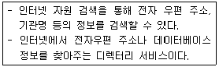
- 정보 맞춤형서비스
- 업무용 포털서비스
- 지식로봇 정보서비스
- 사용자정보 제공서비스
(정답률: 26%)
49. 다음 중 로봇 배제 표준에 대한 설명 중, 알맞은 것을 모두 고른 것은?
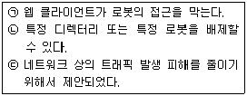
- ㉠
- ㉡
- ㉡, ㉢
- ㉠, ㉡, ㉢
(정답률: 48%)
50. 다음 중 로봇 배제 표준에 대한 설명으로 옳은 것은?
- 1984년 제안된 표준이다.
- 로봇의 접근을 배제하는 방법은 파일을 이용하는 방법과 메타 태그의 속성을 이용하는 방법이 있다.
- 웹 서버 이용자가 로봇의 접근을 차단하기 위해 사용한다.
- 웹 사이트 방문 시 가장 먼저 robots.exe 파일을 확인한다.
(정답률: 47%)
51. 다음 검색엔진의 구성요소에 대한 설명 중 괄호 안에 들어갈 말이 알맞게 짝지어진 것은?
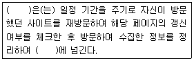
- 로봇 - 색인기
- 검색자 - 색인기
- 로봇 - 검색자
- 검색엔진 – 데이터베이스
(정답률: 68%)
52. 다음 설명에 해당하는 검색엔진은?
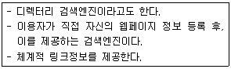
- 하이브리드 검색엔진
- 메타 검색엔진
- 단어별 검색엔진
- 주제별 검색엔진
(정답률: 41%)
53. 다음 설명에 해당하는 검색엔진은?
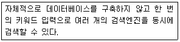
- 주제별 검색엔진
- 지능형 검색엔진
- 키워드 검색엔진
- 하이브리드 검색엔진
(정답률: 45%)
54. 다음 중 전문 서퍼에 의해 관리되는 검색 방식은?
- 지식 검색
- 사이트 검색
- 디렉터리 검색
- 카테고리 검색
(정답률: 43%)
55. 다음 상황에서 유추할 수 있는 누락율은?
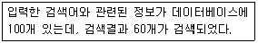
- 23.3%
- 40%
- 60%
- 66.7%
(정답률: 68%)
56. 다음 중 재현율을 높이는 탐색 수단으로 적절한 것은?
- 구검색
- 용어절단
- 인접검색
- 전방일치
(정답률: 44%)
57. 다음 중 구글에서 제공하는 서비스에 대한 설명으로 알맞은 것은?
- Google Meet : 화상 회의 어플리케이션
- Google 포토 : 별도의 설정 없이 전 세계의 사진을 탐색 및 공유
- Google 문서 : 공유가 가능한 일정관리 서비스
- Google 그룹스 : 최신 정보를 한 번에 제공해 주는 서비스
(정답률: 54%)
58. 다음 중 정보검색에 대한 설명으로 알맞은 것은?
- 데이터베이스 및 인터넷 상의 비공개된 정보의 수집이다.
- 검색 대상이 되는 정보의 양은 소량이다.
- 메타데이터는 검색결과를 생성한다.
- 검색한 정보에 대한 출처 및 사용권한에 대해 주의해야 한다.
(정답률: 69%)
59. 다음 중 정보검색에 대한 주의 사항으로 알맞은 것을 모두 고른 것은?
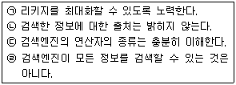
- ㉠, ㉡
- ㉠, ㉢
- ㉡, ㉣
- ㉢, ㉣
(정답률: 65%)
60. 다음 사례와 가장 관련 있는 정보검색 용어는?
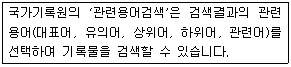
- 개비지
- 리키지
- 불용어
- 시소러스
(정답률: 60%)
61. 다음 설명에서 수행되는 작업들을 모두 고른 것은?
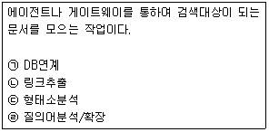
- ㉠, ㉡
- ㉠, ㉢
- ㉡, ㉣
- ㉢, ㉣
(정답률: 42%)
62. 다음 중 검색엔진이 데이터베이스를 구축할 때 제외하는 문자열인 불용어를 처리하는 이유로 옳은 것은?
- 불용어를 포함하면 데이터베이스의 양이 불용어가 출현하는 빈도의 두 배로 커지기 때문이다.
- 불용어는 단어 자체에 의미가 없으며, 정보 검색에 비생산적인 처리과정을 유발하기 때문이다.
- 불용어는 사용자들이 검색어를 입력할 때 입력하지 않기 때문이다.
- 자연어검색을 진행할 때 불용어를 포함시키면 정확한 문맥을 파악하기 어렵기 때문이다.
(정답률: 54%)
63. 다음 설명에 해당하는 정보관리사의 역할은?
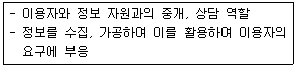
- 정보 분석가
- 정보 상담자
- 정보 중개인
- 정보의 선택자
(정답률: 29%)
64. 다음 중 인터넷 정보 검색 옵션의 종류가 아닌 것은?
- 문장 검색
- 구문 검색
- 자연어 검색
- 결과내 재검색
(정답률: 39%)
65. 다음 중 인터넷 정보원에 대한 설명으로 옳은 것은?
- 유즈넷, FTP 등은 검색 정보원이 아니다.
- 인터넷 상의 모든 정보는 검색엔진으로 검색된다.
- 검색 결과에 대한 분석은 검색사의 역할이 아니다.
- 정보의 형태에 따라 적합한 검색엔진을 선택할 수 있어야 한다.
(정답률: 58%)
66. 다음 중 정보의 특성에 해당하는 것만을 모두 고른 것은?
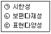
- ㉠
- ㉡
- ㉡, ㉢
- ㉠, ㉡, ㉢
(정답률: 34%)
3과목: 인터넷 윤리
67. 다음은 인터넷 윤리의 기능 중 어떠한 것에 해당하는가?
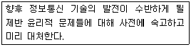
- 처방윤리
- 예방윤리
- 변혁윤리
- 세계윤리
(정답률: 69%)
68. 다음 중 웹 문서 작성시 네티켓으로 가장 거리가 먼 것은?
- 문서 소스의 태그에 실제 URL을 기재한다.
- 웹 페이지에서 그림은 양질의 정보제공을 위해 화질과 크기를 최대로 업로드 한다.
- 원하는 정보의 접근이 쉽도록 메뉴를 구성한다.
- 자신의 고유 저작물에 대해서는 상표권 또는 저작권을 반드시 기재한다.
(정답률: 76%)
69. 다음 중 이메일 네티켓으로 가장 거리가 먼 것은?
- 자신의 아이디나 비밀번호를 타인에게 공개하지 않는다.
- 메일을 보내기 전에 주소가 맞는지 확인한다.
- 제목은 메시지 내용을 함축하여 간략하게 쓴다.
- 개인정보 보호를 위해 가급적 자신의 신분은 밝히지 않고 메일을 보낸다.
(정답률: 74%)
70. 다음 설명에 해당하는 용어는 무엇인가?
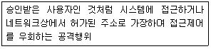
- 스푸핑
- 핵티비즘
- 네카시즘
- 인포데믹스
(정답률: 63%)
71. 다음 중 사이버테러에 해당하지 않는 것은?
- 정보의 위·변조와 해킹
- 악성 바이러스의 유포
- 인터넷을 통한 스와핑
- 사회기반 정보통신 시스템의 파괴
(정답률: 66%)
72. 사이버 명예훼손의 유형과 가장 거리가 먼 것은?
- 인격적 모독
- 허위사실 유포
- 온라인 사기
- 특정인 비방
(정답률: 75%)
73. 다음 중 인터넷의 역기능과 가장 거리가 먼 것은?
- 인터넷 중독
- 인터넷 디톡스
- 유해정보
- 인터넷 테러
(정답률: 73%)
74. 다음 설명에 해당하는 용어는 무엇인가?
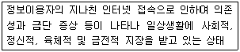
- 인터넷 증후군
- VDT증후군
- 사이버 슬래킹
- 사이버 코쿤족
(정답률: 75%)
75. 다음 중 인터넷 과다사용의 원인으로 가장 거리가 먼 것은?
- 사이버공간 자체의 특성
- 사용자의 심리적 특성
- 가족, 사회, 문화적인 요인
- PC의 대중화
(정답률: 50%)
76. 다음 중 킴벌리 영이 분류한 인터넷 중독의 유형과 가장 거리가 먼 것은?
- 사이버 교제 중독
- 네트워크 강박증
- 사이버 섹스 중독
- 사이버 채팅 중독
(정답률: 37%)
77. 다음 중 인터넷 중독의 3단계가 바르게 나열된 것은?
- 호기심 - 대리만족 - 현실탈출
- 호기심 - 현실탈출 - 대리만족
- 정보교류 - 호기심 - 장애발생
- 정보교류 - 호기심 - 대리만족
(정답률: 69%)
78. 다음 설명에 해당하는 인터넷 중독 증상은?
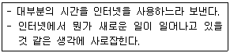
- 강박적 사용과 집착
- 내성과 금단
- 일상생활의 기능 장애
- 일탈 행동 및 현실 구분 장애
(정답률: 59%)
79. 다음 중 K척도의 요소와 가장 거리가 먼 것은?
- 금단
- 내성
- 현실적 대인관계 지향성
- 일탈행동
(정답률: 71%)
80. 인터넷 중독을 예방할 수 있는 방법으로 적합하지 않은 것은?
- 인터넷 때문에 식사나 취침시간을 어기지 않는다.
- 가족이나 친구들과 함께 대화하면서 오프라인으로 소통할 시간을 늘려본다.
- 자아실현을 위한 재미있는 일을 찾는 노력을 해서 존중감을 가질 수 있는 일을 한다.
- PC방에 갈 때에는 가급적 혼자 간다.
(정답률: 77%)